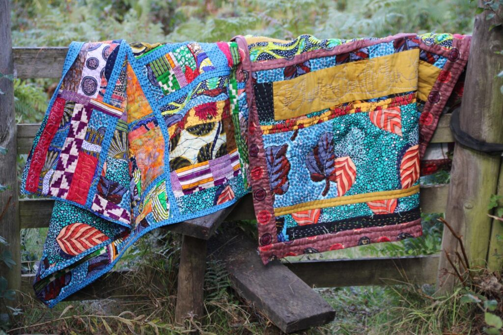
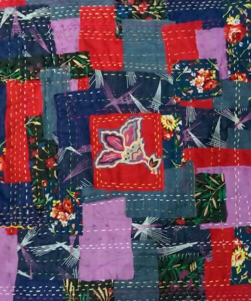

Fusion Quilts – Combining Traditional And Contemporary Processes.

My quilts are made from African fabrics, I use dead stock and pre owned fabrics that I source from a variety of different places.
Due to my dyslexia and ME/CFS I find the most flexible process is Indian – Kwandi rather than Western. I work in blocks that are joined with sashing. The layers are sewn together with visible stitching. This constructs and decorates simultaneously. My summer / lightweight quilts are 2 layers and my winter / heavier quilts are 3 layers.
This fusion of techniques and processes allows for an eclectic freedom that allows the quilts to develop and grow organically with no set pattern or design in mind.
Due to the nature of my process it is easy to adapt the quilts to any size.
My quilt courses are suitable for complete beginners through to professional artists looking for a new way to express themselves. They are dyslexia and disability friendly.
The format for each workshop will consist of welcome, followed by slides. Answering questions followed by a 10 min comfort break, after which we come back to start the making process.
MATERIALS LIST FOR ALL WORKSHOPS:
Fabrics – preferably not new unless you are working from your stash.
Threads – you can use anything from machine threads through to embroidery floss and thin crochet yarn. For visible stitching thicker threads are useful. Again please don’t buy new, charity shops, thrift stores, goodwill will all have a lot of choice.
Needles – They don’t have to be special, I use household needles. Just look at the size of the eye, make sure that your threads fist through easily. My personal preference is longer needles as they have many uses – 1.5 to 2 inches.
Scissors – make sure that they are suitable for fabric, if using scraps, then you just need a small pair of scissors.
Batting – Can be commercial or repurposed clothing, blankets or fleece .Its not a necessity, its an extra.- especially in the Kwandi workshop.
KWANDI QUILTS – THE AFRICAN QUILTS OF INDIA – £35 – 3 HOUR ZOOM WORKSHOP.

In this workshop we will learn the traditional technique of making a kwandi quilt. Kwandisare made by the Siddi tribe that are descendants from African slaves and soldiers. Starting with a brief history of African textiles and the Siddis we will move on to looking at how this process can be adapted to your own way of working. I will then guide you through the processes and techniques allowing you to complete a either a 2D or 3D piece of work.
You will be sent a set of slides by email in PDF format that will be a complete reference guide for further use.You will be sent a set of slides by email in PDF format that will be a complete reference guide for further use.
The format for each workshop will consist of welcome, followed by slides. Answering of questions followed by a 10 min comfort break, after which we come back to start the making process.
Sets of slides from each workshop can be bought independently if you want to work on your own and cannot attend the workshop £10 for each set.
Quilt made by Helena Heinzen ( student from Uruguay – Kwandi workshop)
In this course I am going to show you a simple way to make a quilt by hand. It is dyslexia and mobility friendly. No maths and no sitting on the floor. The quilt is made up in pieces and joined together, se easily made sitting in your favourite chair. Originally known as journal quilts, because each section was similar to a journal page. The quilt is constructed in the Indian method of stitching the 2 or 3 layers of fabric at the same time. Its, quick, its easy and its fun.
This course that takes you through my whole process from starting with discussing fabrics to the finished quilt. In this course there is no pattern, we will work intuitively. All stitching is visible and due to the process stitching is seen on the back as well as the front – this is why I often make my quilts reversible.
This is a chance for you to play, explore and develop your own style and visual language.
Each week you will be sent a set of slides by email in PDF format that will be a complete reference guide for further use.
This course also has a private Facebook group.
Quilt made by Katherine Dyer from USA ( student on Fusion Quilt Course )